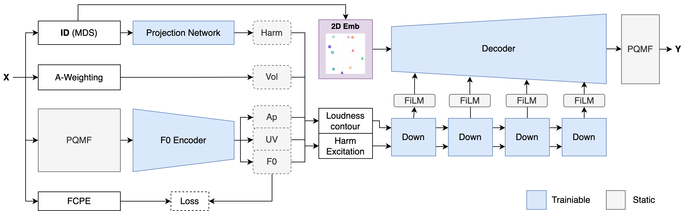

Unified Timbre Transfer [arXiv]
A Compact Model for Real-Time Multi-Instrument Sound Morphing
Abstract
Recent advances in transformer-and diffusion-based deep-generative models have significantly impacted the field of music and audio synthesis. However, controllable and real-time interactive models, such as those used for timbre transfer in music production, remain largely dominated by auto-encoders and generative adversarial networks. In pursuit of efficient and flexible timbre morphing and multi-instrument timbre transfer, we propose a simplified modeling approach, utilizing an upsampled two-dimensional timbre space in conjunction with engineered and instrument-dependent, excitation signals. Our model enables any-to-many timbre transfer with precise control over timbre, pitch, and loudness, while also allowing for seamless interpolation between instruments, eliminating the need for separate model training. We achieve performance comparable to specialized models, while supporting 44.1 kHz generation, making it highly relevant for the broader creative music community.

Background
We introduce a novel, monophonic, multi-instrument timbre-transfer framework that improves flexibility, control, and real-time performance while simplifying the generation process. Inspired by both DDSP and RAVE, our approach uses a generator conditioned on a perceptual timbre space, acting as a neural filter that processes an instrument-dependent excitation signal.